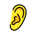
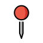
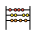
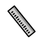
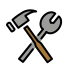
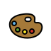
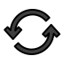

backhand index pointing up
Artist: Julian Grüneberg · Source file

Used on inclusive, w02-inversion-of-control, w02-state-owner, w04-reading, w12-async, w12-retry, w14-boundary.
Artwork by Benedikt Groß, Daniel Utz and the OpenMoji contributors (HfG Schwäbisch Gmünd). CC BY-SA 4.0. Source release 17.0.0, retrieved 2026-09-27. Unmodified SVG artwork. Reused symbols consistently identify the same concept. No endorsement is implied. Full license.
The surrounding teaching sequences are original course illustrations, not application screenshots or measurements. Their labels describe the existing lesson examples. Each icon keeps its own attribution and license.
Artist: Julian Grüneberg · Source file
Used on inclusive, w02-inversion-of-control, w02-state-owner, w04-reading, w12-async, w12-retry, w14-boundary.
Artist: Carlin MacKenzie · Source file
Used on inclusive.

Artist: Julian Grüneberg · Source file
Used on inclusive, w04-labels.

Artist: Sina Schulz · Source file
Used on permission, w03-pitch-1.
Artist: Lisa Schulz · Source file
Used on permission, w05-privacy, w13-identity, w13-test.
Artist: Martin Wehl · Source file
Used on permission.
Artist: Hilda Kalyoncu · Source file
Used on w02-inversion-of-control, w02-recompute-not-relaunch, w06-transform, w09-context.

Artist: Nicole Kornhaas · Source file
Used on w02-inversion-of-control, w02-recompute-not-relaunch, w02-source-of-truth, w08-invariant, w08-derived, w14-boundary, w14-double.
Artist: Martin Wehl · Source file
Used on w02-recompute-not-relaunch, w03-criteria, w04-tree, w07-route, w08-architecture, w09-container, w09-relaunch, w10-resources, w12-async, w14-levels, w15-signing, w15-demo.

Artist: Sina Schulz · Source file
Used on w02-source-of-truth, w05-derived, w08-domain, w08-architecture, w14-levels.
Artist: Laura Humpfer · Source file
Used on w02-source-of-truth, w04-labels, w05-feedback, w08-derived.

Artist: Martin Wehl · Source file
Used on w02-state-owner.
Artist: Julian Grüneberg · Source file
Used on w02-state-owner, w06-delete, w09-crud, w10-query.
Artist: Johanna Wellnitz · Source file
Used on w03-need, w03-pitch-1, w13-identity, w13-sync, w15-signing, w15-demo.
Artist: Martin Wehl · Source file
Used on w03-need, w04-reading.
Artist: Rana Cakir · Source file
Artist: Sina Schulz · Source file
Used on w03-criteria, w05-privacy, w08-domain, w09-container, w15-candidate, w15-demo.
Artist: Crystal Moon · Source file
Used on w03-criteria, w04-tree, w04-reading, w11-delete.

Artist: Hilda Kalyoncu · Source file
Used on w03-pitch-1, w14-redgreen, w15-configuration.
Artist: Vanessa Boutzikoudi · Source file
Used on w03-pitch-8.
Artist: Liz Bravo · Source file
Used on w03-pitch-8, w12-fixture, w14-double, w15-candidate, w15-configuration, w15-version.
Artist: Ronja Bäurlen · Source file
Used on w03-pitch-8, w09-relaunch, w14-boundary.
Artist: Crystal Moon · Source file
Used on w04-tree, w04-type, w05-derived, w11-representation.
Artist: Liz Bravo · Source file
Used on w04-stacks, w07-patterns.
Artist: Liz Bravo · Source file
Used on w04-stacks.
Artist: Marleen Heine · Source file
Used on w04-stacks.

Artist: Sina Schulz · Source file
Used on w04-type, w06-empty, w07-intent, w07-route, w10-query, w12-cancel.
Artist: Jonas Roßner · Source file
Used on w04-type.
Artist: Vanessa Boutzikoudi · Source file
Used on w04-labels.

Artist: Rana Cakir · Source file
Used on w05-owner, w06-edit, w07-intent, w07-map, w07-patterns, w09-context, w09-crud, w13-conflict.
Artist: Sina Schulz · Source file
Used on w05-owner, w07-map, w09-container, w09-fixtures, w10-query.
Artist: Hilda Kalyoncu · Source file
Used on w05-derived, w06-add, w08-invariant, w11-states, w14-redgreen.
Artist: Miriam Vollmeier · Source file
Used on w05-feedback, w06-empty, w11-states, w12-fixture, w12-retry, w14-redgreen, w14-double.
Artist: Jonas Roßner · Source file
Used on w05-cancel, w07-sheet, w09-context, w09-relaunch, w10-resources, w11-durable.
Artist: Jose Avila · Source file
Used on w05-cancel, w07-sheet, w11-cancel.
Artist: Jose Avila · Source file
Used on w06-transform.
Artist: Crystal Moon · Source file
Used on w06-transform, w06-edit.
Artist: Jonas Roßner · Source file
Used on w06-add, w06-delete, w06-edit, w07-map, w07-route, w11-durable, w11-delete, w13-configuration, w15-candidate, w15-version.
Artist: Marius Schnabel · Source file
Used on w06-add, w06-empty, w09-crud, w12-fixture, w14-double.
Artist: Sina Schulz · Source file
Used on w06-delete, w09-crud, w10-delete, w11-delete.
Artist: Kai Magnus Müller · Source file
Used on w07-intent, w07-patterns.

Artist: Martin Wehl · Source file
Used on w08-domain.

Artist: Hilda Kalyoncu · Source file
Used on w08-invariant, w12-cancel, w13-identity, w13-conflict, w15-signing.
Artist: Jonas Roßner · Source file
Used on w08-value, w10-repeat.
Artist: Hilda Kalyoncu · Source file
Used on w08-value, w14-levels.
Artist: Nicole Kornhaas · Source file
Used on w08-derived.
Artist: Vanessa Boutzikoudi · Source file
Used on w08-architecture, w12-stale, w13-sync, w13-test.
Artist: Tonia Reinhardt · Source file
Used on w09-fixtures, w12-stale, w13-test, w14-isolation.
Artist: Vanessa Stoessinger · Source file
Used on w10-delete.

Artist: Vanessa Boutzikoudi · Source file
Used on w10-phases.
Artist: Jose Avila · Source file
Used on w10-phases.
Artist: Vanessa Boutzikoudi · Source file
Used on w10-phases.

Artist: Jose Avila · Source file
Used on w10-repeat, w11-cancel, w12-cancel, w13-sync, w14-boundary.
Artist: Rana Cakir · Source file
Used on w10-resources, w11-states, w12-async, w12-retry.
Artist: Martin Wehl · Source file
Used on w11-representation, w11-states, w11-durable.
Artist: Lisa Schulz · Source file
Used on w11-cancel.
Artist: Lisa Schulz · Source file
Used on w13-configuration.